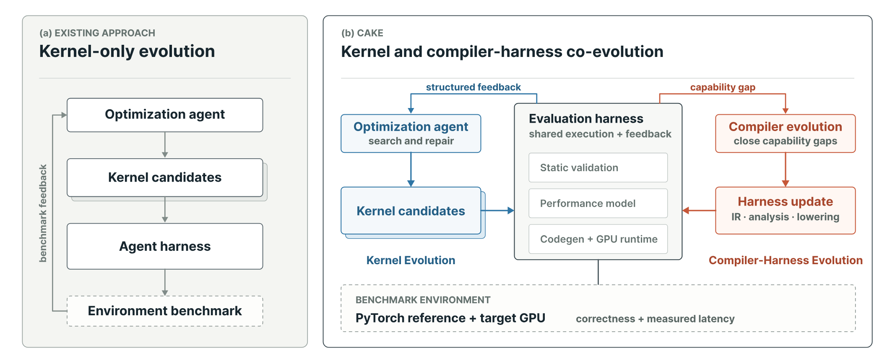
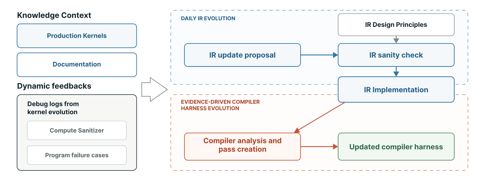
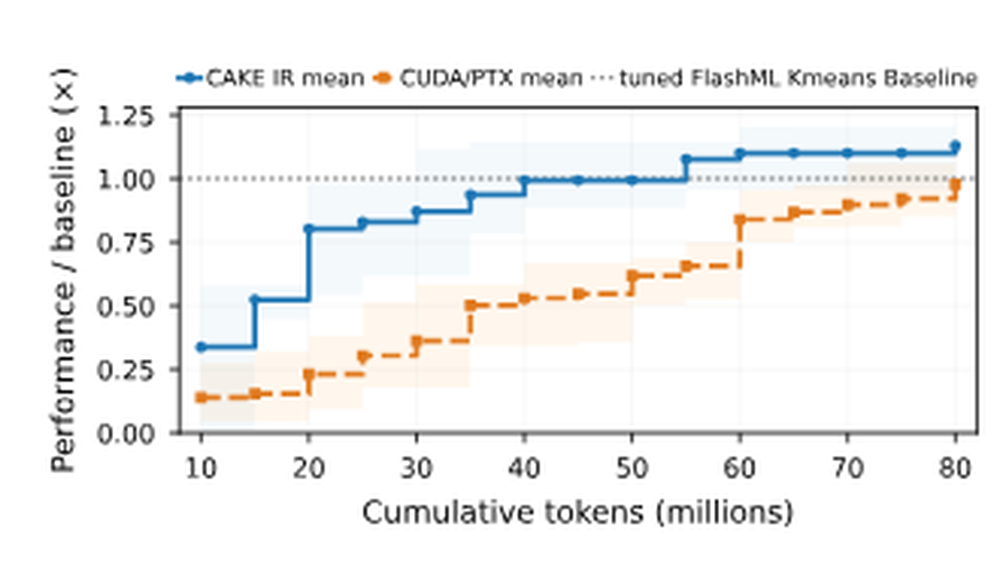
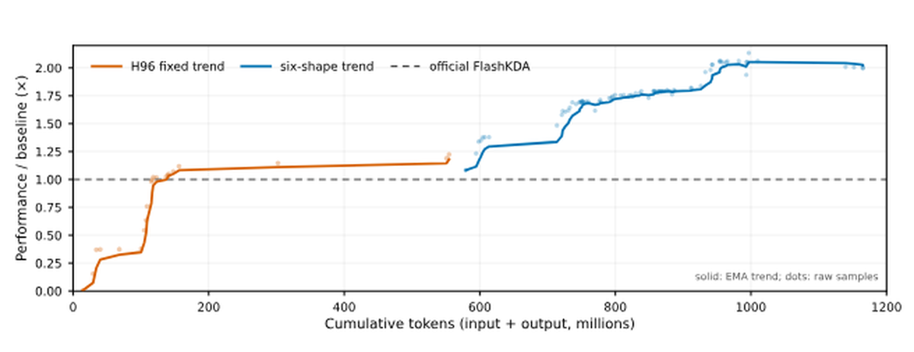
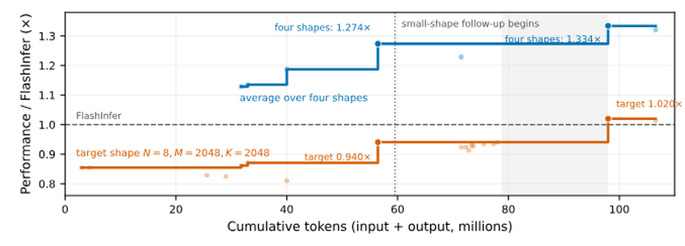
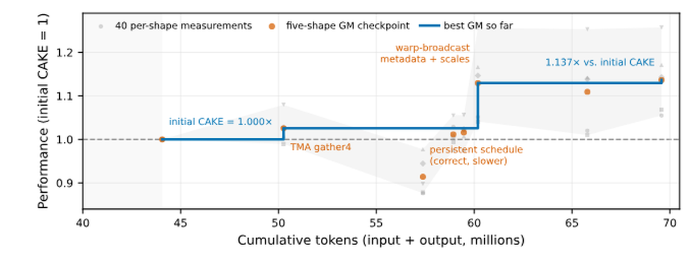

GPU内核agent和GPU编程语言一直在各自发展，而两者之间的空白地带，恰恰是专家内核丢失的地方。内核agent把编译器当固定黑盒：它们改进提议、变异、排序，但环境只返回编译错误、正确性结果和端到端耗时：这些信号永远不说出是哪条程序决策导致了同步失败、硬件契约违规或流水线停顿。
与此同时，agent会写的那些语言也不是为agent设计的：tile级DSL隐藏了warp特化、屏障编排和内存层放置：这些正是区分专家内核与「只是正确」的内核的关键；低级DSL暴露了这些控制，却要求一种布局演算，让agent的错误既易犯又难定位。
CAKE把两者协同设计：agent编写Cake IR，一种类型化、硬件显式的调度表示，无需布局代数就能拿到细粒度控制，并携带足够信息让verifier和成本模型在编译前推理程序；harness回以本地化的正确性与性能诊断，且它本身也是演化目标：重复失败变成新的verifier规则、IR原语、成本模型校准和可复用战术，而不是一次性补丁。
编码agent已经能在正确性和性能自动测量的环境中编写、修订GPU程序。但多数这类系统仍把编程环境当固定黑盒：agent提议代码、编译、跑数值测试、测延迟、再挑一次编辑。循环对局部调优有效，但崩溃不指出违反的是哪条安全或硬件条件，一个延迟数字也解释不了是哪个程序决策在拖性能。

专家内核程序员的工作方式不同：他们在脑内保持工作负载的紧凑模型，对显式硬件资源做推理，在内核之间携带可复用规则。编译器其实已经握着外部化这一过程所需的大部分机制：结构化操作词汇、资源模型、合法性检查、静态分析、成本模型、lowering规则。CAKE的问题是如何让这些机制变得「对agent可见」，以及当前沿工作负载暴露缺口时如何改进它。
CAKE用三个承诺回答。第一，agent编辑类型化IR而非裸CUDA，所以硬件决策在代码生成前就可检查。第二，编译器返回本地化的正确性与性能诊断，而非一个pass/fail位，所以廉价分析能在候选消耗GPU时间之前过滤它们。第三，harness本身是演化目标：重复失败变成verifier规则、校准任务或新原语，由语料测试把关。
Cake IR是自底向上通过agent驱动的抽象发现构建的，素材是生产内核语料加硬件设计原则，约束是必须复现专家手写内核的物理调度与性能。harness同样主要由agent在人工合并闸门下维护。
系统支持两个入口，对应内核工作的两种实际到达方式：从FlashInfer或CUTLASS这样的库里的生产内核出发继续演化；或对没有成熟参考的工作负载，从高层描述或Triton实现出发，让agent用Cake IR选warp特化、布局和流水线结构，编译器负责验证并生成CUDA。
Cake IR记录机器该如何被驱动：哪些warp承担哪些角色、哪些缓冲区被多深地分阶段、哪个屏障守哪个交接、哪个指令形式消费哪个操作数。分工是：调度声明要发生什么，lowering推导如何发生：屏障地址、相位位、TMEM偏移、描述符编码、warp身份全部从声明计算，而非由agent手写。
四个性质在起作用。类型化词汇：计算、内存移动、同步、数学、warp控制用固定IR词汇而非内嵌C或PTX。声明式资源：内存区、同步状态、流水线声明一次，IR知道每个缓冲区的形状、dtype和生命周期。显式角色：warp组被命名，每个跨角色交接可见而非隐式约定。自动派生元数据：这些声明的机械后果被lower而非手写。
回报是分析能在代码生成前就从显式调度决策推理。harness能把发现关联到受影响的资源、角色或阶段，而不是只返回一个后端错误或挂起。布局故意不是一等抽象：不需要agent操作布局代数，Cake IR直接在调度里记录存储与访问决策，编译器检查生产者与消费者表示与目标硬件兼容。
同一张schedule语言覆盖Ampere到Blackwell：角色-屏障-流水线调度在结构上可移植，而指令准入与lowering保持目标特定。Cake精确映射所连GPU，对不支持的target明确报告而非静默替换成另一架构，只在有目标特定校准处给出性能估计。
harness是Cake IR周围的agent可见环境。人在高层描述想要的分析，agent在验证下实现、维护并精炼它们。内核演化期间，廉价分析在候选到达昂贵GPU运行前对它们排序、过滤。

编译前，harness检查类型化调度的同步、内存安全、数据流、资源、指令和数据表示违规：拒绝很多数学上看似合理但与目标执行模型不兼容的候选。一项发现指出受影响的程序区域和违反的契约类别，通过稳定分析接口给agent一个有用的修复目标。数值正确性对比内核与参考在不同形状和输入分布上的输出；最终验收要求在对应目标框架中端到端评估。一个校准过的成本模型估计候选性能并返回高层瓶颈归因与优化指导。
CAKE让编译器与内核一起演化：内核候选、验证结果、基准和失败报告为提议并验证编译器变更提供证据。两条互补路径：agent检视生产内核与硬件文档发现缺失的Blackwell模式（新指令形式、资源类型、描述符变体、同步惯用法）并提变更提案；或把失败候选的反馈（sanitizer报告、失败案例、正确性失配、调试日志）蒸馏成新分析：不透明运行崩溃变成verifier规则，重复非法lowering模式变成静态检查，系统性误预测变成校准目标。
两条路径耦合：新原语向编译器暴露更多硬件事实、让分析更强；新分析反过来约束未来原语的设计空间。编译器变更跨内核语料做测试把关：原语和它的分析必须一起演化。
三个问题：harness能否驱动重复clean-start演化越过tuned基线；能否在不看低级实现的情况下综合前沿内核；能否复现专家内核。所有测量用B200上的GPU正确性检查 + CUPTI计时，每次计时前刷新L2。

Flash-KMeans clean-start是核心对照。这是Sparse VideoGen2启发的精确k-means工作负载，Lloyd迭代的两个BF16内核占端到端95% 以上：assign（计算密集的BF16 GEMM+reduction）和centroid_update（带宽与原子竞争敏感）。treatment组写类型化Cake IR，对照组直接写CUDA C++ 与内联PTX，都拿同样的任务规格、正确性oracle、基准接口，但隐藏低级目标实现。
结果：80M token预算下，Cake IR 3/3 runs达到预设plateau标准，中位最优1.144× tuned FlashML基线，中位active evolve时间1.89小时；直接CUDA/PTX 0/3达plateau，中位最优仅0.928×，active evolve 3.73小时。轨迹显示Cake IR均值在55M token时跨过tuned基线并继续改善，而CUDA/PTX均值到80M截止仍在基线之下。
前沿内核的运作定义：agent必须在不检视低级目标实现的情况下发现其物理调度。这是协同演化的IR最该帮上忙的场景：搜索无法锚定到已知良好设计，也是harness最容易暴露缺口的场景。


Kimi Delta Attention（KDA）是最清晰的案例。官方FlashKDA只当黑盒计时基线，源码与生成代码都不给agent。FlashKDA兼容的prefill覆盖固定/打包可变/tail输入，在六个B200 BF16形状上达2.05× 几何平均加速，验证契约上逐位正确，且在SGLang下Kimi-K3端到端服务中验证。生成CUDA已在FlashInfer PR #4262可用，下游用户零依赖Cake。独立的decode路径跨30个公开API形状达1.14× 几何平均（PR #4279）。与GEMM不同，KDA含一个必须跨chunk保持存活的循环状态：这是对调度表示的好测试。
Gated DeltaNet的prefill与speculative-decode路径在保持模型循环状态的同时改善性能；MiniMax sparse attention进一步证明同一表示支持prefill与decode的稀疏注意力家族。
TinyGEMM是参照引导的生产演化案例：从FlashInfer的TensorRT-LLM派生小MM BF16内核出发，agent产出浅/深流水线的自适应家族，含PDL变体与8以下批大小。PR #4274报告跨35个规范形状18-23% 几何平均内核时间缩减。Greedy decoding在B200/GB300上对GPT-OSS-20B/120B保持逐位一致。
Alpha-MoE验证了通信密集的megakernel演化：从Hopper原实现出发，Cake agent为Blackwell重写了它的W8A8 fused MoE megakernel：融合路由收集、两个投影、激活、重量化与路由加权输出累加进一个设备程序。API级加速6.204×（N=256）/4.025×（N=512），GPU-span重测1.215×/1.170×：大的API级增益来自launch/schedule融合减少调度空隙与更简单的workspace处理（参考启动5个GPU活动，Alpha-MoE只用输出重置 + 一个megakernel）。PR #4287。
为验证生产级输出，还针对带SOTA基线（TensorRT-LLM、CUTLASS、DeepGEMM、FlashAttention-4、FlashInfer）的已知算子族。11个固定对比中10个达标或超过参考，剩余1个达96.5%。最强的是两个MQA indexer约1.27×。

低于参考的变体一般反映编译器集成成熟度而非不同算法目标：内核想要的特性还在集成中时，提交物用最接近的支持策略。反过来，最强的indexer胜出不是参考内核的忠实转录：移植中agent探索了原实现没有的优化并保留通过正确性与基准的变体。每个Cake IR实现都比其审计参考设备核心更短，证明这些硬件调度能在Cake IR里紧凑表示。
已验证语料含400+ 静态/编译案例与399个GPU正确性案例，跨约28个家族：注意力、稠密/稀疏GEMM、MoE、量化、归一化、状态空间模型、KNN、KMeans：从Ampere到Blackwell的架构特定路径。因为角色、屏障、缓冲区被声明而非隐含，通常分开的内核可表达为一个设备程序：BatchAttention合并decode与prefill，Alpha-MoE融合路由/专家计算/输出累加而不物化中间结果。4个上游变更：KDA prefill、KDA decode、TinyGEMM2、Alpha-MoE。
以上所有都在优化一个形状。而库要接受调用方传的任何形状。弥合这个差距不是在内循环上跑更多形状：它是一个独立阶段，目标、排序信号、失败模式都不同，CAKE也把它当独立阶段处理。
精确形状给内循环干净的除数和激进的专化；用广覆盖给这个循环打分会削弱信号。因此泛化只在强per-shape种子存在后开始，并用含dispatcher的固定工作负载性能打分。错误或慢的种子回到内循环而非藏在路由后面。泛化阶段把测量过的种子分组进形状桶，产出专化或共享变体，并在显式回退后排序它们的guard。报告聚合前，验证覆盖代表性与留出输入、边界与尾部情况、重叠或缺失guard、以及回退路径。
Dispatcher-backed的KNN与KMeans家族跨400+ 形状提升1.42×-2.12× 性能。CAKE的目标是：用模块化的内核族，让agent不只是写出一个快的形状，而是演化出一个库能调的家族。
参考：https://arxiv.org/abs/2608.12629